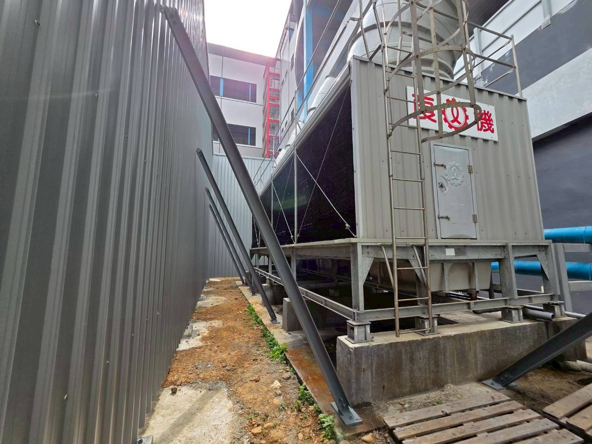

冷卻水塔的噪音來源通常不是單一項。風扇、馬達、減速機、水流、出風方向、基座與建築結構都有可能參一腳。
1. 風扇與馬達
葉片、轉速、軸承、馬達與減速機都可能產生固定頻率或寬頻噪音。
2. 出風口方向
上方出風具有方向性，若剛好朝向鄰棟住宅或反射牆面，受音點可能比機器旁更明顯。
3. 水流與落水聲
有些案件不是馬達最吵，而是落水、水盤與填料區的水聲。
4. 基座、避震與樓板
屋頂或鋼構平台若隔振選型不合、老化或形成剛性短路，低頻振動可能直接送進建築。
5. 周圍反射與屏障
女兒牆、機房牆、鄰棟立面都會改變聲音傳播，隔音牆高度與位置不能只憑直覺。
為什麼夜間特別容易被反映？
背景音降低後，同樣的冷卻水塔會更突出。若設備 24 小時運轉，夜間更容易引發住戶陳情。
實務上先別猜材料：先確認哪一台、哪個頻率、哪條路徑、哪個受音點，再決定消音、隔音、導流或減震。
隔音牆不是萬用藥
空氣傳播聲可以用隔音牆或消音構造處理；結構傳振則要回到設備基座、避震器、連接件與平台。若主因是出風氣流與風扇聲，還要兼顧風量與系統阻力。
桃園、新竹、新北、台北常見場景
工廠屋頂、商場、大樓公設、餐飲與旅宿場所常把冷卻水塔設在頂樓或機房外。服務範圍包含桃園、新竹、新北、台北與全台。
延伸閱讀：冷卻水塔噪音改善主頁、冷卻水塔夜間噪音。
常見問題
冷卻水塔加高隔音牆就一定有效嗎？
不一定。若聲音繞射、出風口高於屏障，或問題其實是結構振動，單做隔音牆效果可能有限。
低頻通常來自哪裡？
風扇、馬達、減速機、基座、平台共振與水流都有可能。